Managing Assembly Business Rules
When I embarked on my journey to learn Workspaces and Assemblies, I set out to convert existing applications that I had previously built into the Workspace Aware framework. I quickly realized that converting my traditional (non-financial) business rules into an Assembly business rule was actually trivial. The concepts between the two are identical except for the fact that you will have a new, more detailed reference to where the new Assembly business rule is located.
The bigger differences come with Assembly Services, which we will go over in detail in Chapter 7.
Remember, the overarching goal here is to segment the different code within a Workspace to keep everything related together for portability, ease of use, and improved performance. When converting from pre-Workspace to now separating and converting all items to individual Workspaces, the easiest way to convert traditional business rules is by creating Assembly business rules.
In this chapter, I will walk you through the process of creating, maintaining, and invoking Assembly business rules. The steps are straightforward and easy, but will take a little time to get used to.
Assembly business rules are an excellent bridge between the traditional way of writing code and the Assembly approach within Workspaces. While I have mentioned that Assembly business rules are a transition from traditional to Assembly Services, it is perfectly acceptable to continue using Assembly business rules for as long as you like. This structure is not going away, so if you are more comfortable with Assembly business rules, by all means, continue to build them. Just keep in mind that Assembly Services are needed for finance business rules and all dynamic content, so plan accordingly.
Managing Assembly Business Rules
Components of Assembly Business Rules
Before we start creating an Assembly business rule, let’s revisit the terminology around Assemblies to ensure we understand the moving parts.
Assembly: The entire group of files and dependencies.
Compiler Language: VB.Net or C# will be declared at the Assembly level, and every file within that Assembly will have that selected codebase.
Assembly Business Rule: A file within an Assembly that has specific source code defining its purpose.
Source Code Type: When creating a new Assembly file, you select the source code type to create the file with the correct libraries.
Dependencies: External libraries, other Workspace Assemblies, or business rules required by an Assembly to function correctly, ensuring it has access to the resources or functionality it depends on.
Now, we will explain and demonstrate the process of creating and executing different Assembly rules. We will first walk through the process of creating an Assembly, then move through the steps of creating Assembly business rules, and lastly, show the various methods and syntax of executing these rules.
Managing Assembly Business Rules › Components of Assembly Business Rules
Create Assembly First
The first thing we do is create an Assembly. Note that you can create more than one Assembly within a maintenance unit; although this is not very common, there may be reasons that make your particular situation more efficient. As an example of where this may be useful, when I was starting to convert applications to C#, I would create two Assemblies, where one would have Visual Basic as the compiler language and the other would have C# as the language. This allowed me to start switching over to C# incrementally. Another example is to have multiple versions of the business rules saved in your development Workspace. As you will see later, two Assemblies with different names (MyAssembly_Old and MyAssembly) can contain business rules with the same name. This can be very useful if you want to quickly rollback changes in your business rules.
As a reminder, an Assembly is a collection of files that contain code, and an Assembly business rule is a file within the Assembly. So, whichever compiler language you set for the Assembly, all files within that Assembly will have the same language.
Within a maintenance unit, select the Assemblies group and then the toolbar icon to open Create Assembly. Click that icon, and a new Assembly Properties screen will open for you to name the Assembly and select the compiler language. Click the Save button, and you now have an Assembly defined.
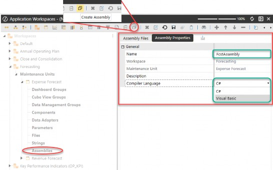
Figure 6.1
Managing Assembly Business Rules › Components of Assembly Business Rules › Create Assembly First
Working with Workspace Assemblies 101
Before we dive into creating Assembly business rule files, let’s talk about how to navigate and work with Assemblies.
Managing Assembly Business Rules › Components of Assembly Business Rules › Create Assembly First › Working with Workspace Assemblies 101
Working with Workspace Assemblies Summary
Unique Assembly Names: Assembly names must be unique within the Workspace. You cannot have the same name in two different maintenance units.
Compiler Language: All compiler language is set at the Assembly level. In other words, if your Assembly is set to C#, all files within that Assembly will use C#.
Compiler Button: When you click the Compiler button, it compiles all files within the Assembly that have not been set to Disable Compiler.
Copy and Paste: You can copy and paste Assemblies either by right-clicking on the Assembly and clicking on Copy then Paste, or by selecting the Assembly Properties tab at which point the copy button will be enabled.
Delete an Assembly: You can only delete a full Assembly by selecting the Assembly, then clicking on the Assembly Properties tab, at which point the delete button is enabled. (Note: To delete an Assembly file, right-click on the file and select Delete.)
Rename an Assembly: You can only rename an Assembly if you are on the Assembly Properties tab, at which point the rename button is enabled. (Note: All Assembly names within aW must be unique.)
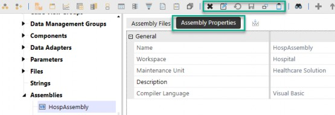
Figure 6.2
Managing Assembly Business Rules › Components of Assembly Business Rules › Create Assembly First › Working with Workspace Assemblies 101
Working with Workspace Assemblies Detail
Unique Assembly Names: Assembly names must be unique within the Workspace. You cannot have the same name in two different maintenance units. If you inadvertently try to name an Assembly with a non-unique name, the system will prevent you from saving.
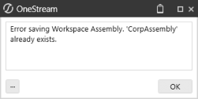
Figure 6.3
Compiler Language: The compiler language for all files is set at the Assembly level. Every file within the Assembly will have the same language.
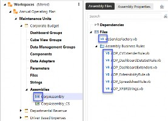
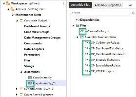
Figure 6.4 Figure 6.5
Compiler Button: The Compiler button compiles all files within the Assembly that are not marked Disabled. In this example,
TestBusinessRule_1.vbis marked as Disabled, so the compiler will skip this file and only compile the other two.vbfiles. (Note: This is a change from how traditional business rules are compiled.)
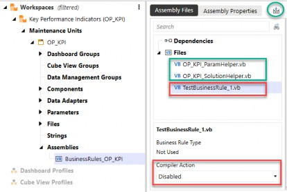
Figure 6.6
| Useful tip: You can include files that are not compiled for documentation of the business rule (example: a README file). |
Toolbar buttons are disabled when on the Assembly Files tab.
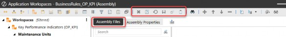
Figure 6.7
Toolbar buttons are active when on the Assembly Properties tab.
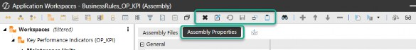
Figure 6.8
Managing Assembly Business Rules › Components of Assembly Business Rules › Create Assembly First
Encrypting Assembly Files
When you need to protect your code, you can encrypt individual Assembly files and make them password-protected. There is a setting in the Security Roles of the Application tab that needs to be enabled for this to happen.
Enable Security Groups: Enable security groups to encrypt business rules in the Security Roles section of the application.
Encrypt File: Right-click on the Assembly file to see the option to Encrypt the file to password-protect it.
Encryption Icon: The file now has an encryption icon to signal that it is encrypted; when that file is selected, no code will show.
Decrypt File: To decrypt an encrypted file, right-click on the file and select Decrypt and enter the password to remove the encryption.
| OneStream Security Essentials is the first mini-book from OneStream Press. |
Let’s go through these steps in a little more detail.
Managing Assembly Business Rules › Components of Assembly Business Rules › Create Assembly First › Encrypting Assembly Files
Enable Security Groups
Enable security groups to encrypt business rules in the Security Roles section of the application.
The default for this security role setting is Nobody. If this is the case, you will not see an Encrypt option when right-clicking on the Assembly file.
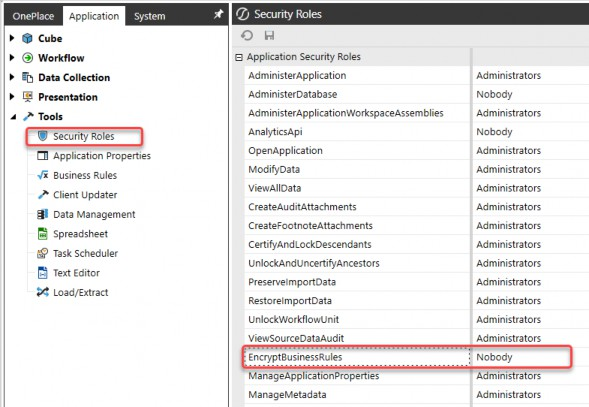
Figure 6.9
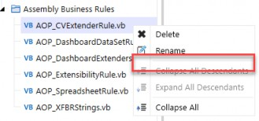
Figure 6.10
Once the appropriate security group is selected, the Encrypt selection appears in the right-click menu on the Assembly file.
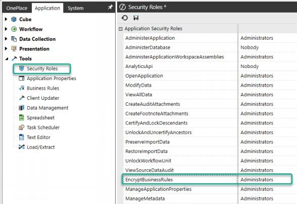
Figure 6.11
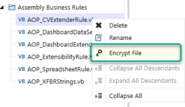
Figure 6.12
Managing Assembly Business Rules › Components of Assembly Business Rules › Create Assembly First › Encrypting Assembly Files
Encrypt File:
Right-click on the Assembly file to see the option to encrypt it and password-protect it.
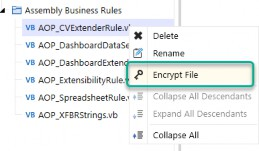
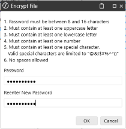
Figure 6.13
Managing Assembly Business Rules › Components of Assembly Business Rules › Create Assembly First › Encrypting Assembly Files
Encryption Icon:
The file now has an encryption icon to signal that it is encrypted; when that file is selected, no code will show.
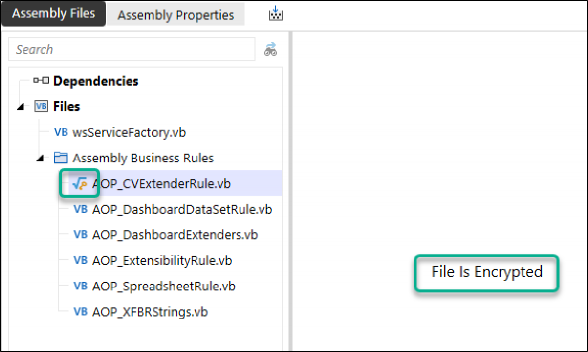
Figure 6.14
Managing Assembly Business Rules › Components of Assembly Business Rules › Create Assembly First › Encrypting Assembly Files
Decrypt File:
To decrypt an encrypted file, right-click on the file and select Decrypt and enter the password. Encryption is removed.
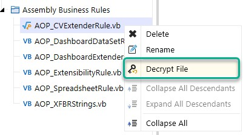
Figure 6.15
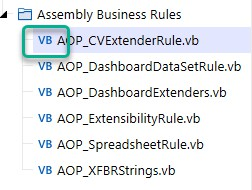
Figure 6.16
Managing Assembly Business Rules
Create Assembly Business Rule
Now that we have produced an Assembly, we can create the appropriate Assembly business rule. But first, let’s create a folder that will hold our business rules. This isn’t technically necessary, but folders will come in handy later as we are trying to have a well-organized Assembly structure.
Because it is possible to have Assembly service files in the same Assembly as the Assembly business rules, it is best to start organizing the files as we go.
Simply right-click on the Files icon and select Add Folder to create a folder and name it appropriately.
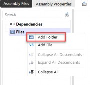
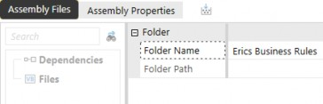
Figure 6.17
To create an Assembly business rule file under the new folder, right-click on the folder and select Add File. The Add File dialog box will prompt you to name the file, select the appropriate source code type, and choose whether to include the file in the Assembly compiler (the default is to Enable Compiling).
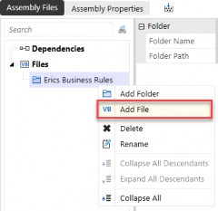
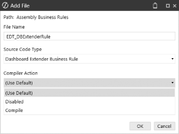
Figure 6.18
For Assembly business rules, the source code type is at the bottom of the list and has the suffix of
Business Rule.
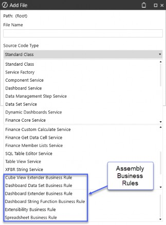
Figure 6.19
Once the file is created, OneStream prepopulates the file with the predefined classes and arguments for the source code type you selected, as well as placeholders for functions. In the screenshot example, you can see that since we selected the Dashboard Extender Business Rule source code type, the file is populated with classes and args that correlate to dashboard extender logic.
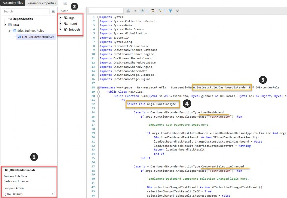
Figure 6.20
When the file is created, you will see that the bottom left of the screen gives information about the file: Business Rule Type and Compiler Action. This is where you can change the compiler action.
The helper section lists all the arguments available within this rule, plus the APIs available, and snippets of code to help with writing the proper syntax. Note that these helpers correlate to the code source type that was selected for the Assembly file.
Within the code, you can see the code type is a BusinessRule and the
DashboardExtender library of classes and functions.
Some function types are listed as examples, suggesting the most common actions you can control.
The purpose of this book is to get you comfortable understanding where and how to set up Assembly files in Workspaces, but it isn’t meant to be a guide on how to actually write the code to customize your application. So, at this point in your application development, you will probably begin writing your code within the Assembly business rule file and do your appropriate testing. The next section will cover where and how to execute these Assembly business rules.
Managing Assembly Business Rules › Create Assembly Business Rule
Copy and Paste Nuances with Assemblies
Managing Assembly Business Rules › Create Assembly Business Rule › Copy and Paste Nuances with Assemblies
Copying and Pasting Assemblies
When copying and pasting Assemblies, all the files and dependencies are copied and then pasted into a new Assembly that has the suffix _Copy. This gives the Assembly a unique name within the Workspace. All the files and dependency references within the pasted Assembly will have the same exact name since the uniqueness needs to be at the Assembly level and not the Assembly file level.
You can right-click on an Assembly to Copy and Paste, or select the Assembly Properties tab on the Assembly, and the toolbar icons allow you to copy and paste:
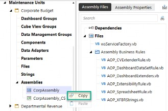
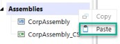
Figure 6.21 Figure 6.22
Filenames within the copied Assembly don’t change.
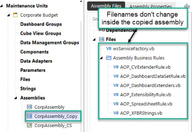
Figure 6.23
Managing Assembly Business Rules › Create Assembly Business Rule › Copy and Paste Nuances with Assemblies
Copying and Pasting Individual Business Rule Type Files
The title of this section is deceptive because you cannot copy and paste individual files within an Assembly. When you right-click on an Assembly file, there are no options for copying and pasting:
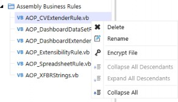
Figure 6.24
Instead, you must create a new file and copy and paste the code within the file into the new Assembly file. Highlight the code you would like to copy and right-click on the highlighted code to select Copy. When copying the code, make sure you do not include the namespace since that is unique for each Assembly file. You can grab everything between Namespace and End Namespace (note that this is true for business rule type Assembly files; for other types, you will need to consider the Public Class Name as well, where the public class must be named the same as the file).
Create a new Assembly file of the same source code type you are trying to copy.
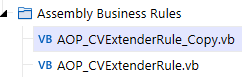
Figure 6.25
Highlight the code in the original rule between Namespace and End Namespace, right-click and
Copy.
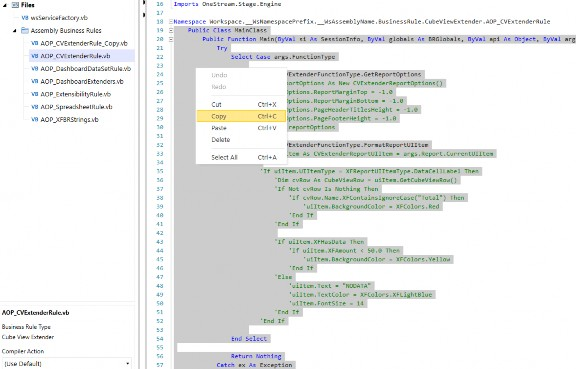
Figure 6.26
Pasting the code into the new file you created should not overwrite the namespace section since it contains the unique filename attached to this Assembly file.
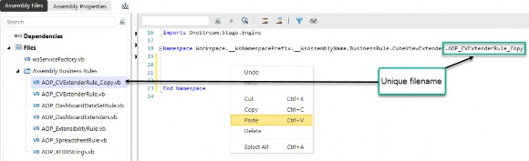
Figure 6.27
Again, this might be completely obvious to you, but if not, this hopefully clears up some confusion.
Managing Assembly Business Rules
Referencing Assembly BRs
Once an Assembly business rule is created, referencing it works almost exactly the same as invoking traditional business rules, but through an updated path. Where you would once reference the business rule name, you now reference the Workspace, Assembly, and filename. Let’s use an example of a dashboard extender business rule to illustrate the differences.
Syntax to call a traditional business rule:
{MyDashboardExtenderBRName}{MyFunction}{Param1=[MyValue1],Param2= [MyValue2]}
Syntax to call an Assembly Business Rule:
{Workspace.WorkspaceName.AssemblyName.Filename}{MyFunction}{Param1= [MyValue1],Param2=[MyValue2]}
Other options to call the same rule:
{Workspace.WorkspaceNamePrefix.AssemblyName.Filename}{MyFunction}{Para m1=[MyValue1],Param2=[MyValue2]}
{Workspace.Current.AssemblyName.Filename}{MyFunction}{Param1= [MyValue1],Param2=[MyValue2]}Let’s dive deeper into the references here, so we are crystal clear on how these references work with Assembly business rules.
Workspace: Indicates to OneStream that we are looking for an Assembly business rule in a Workspace and not in the central repository of traditional business rules.
WorkspaceName: Specifies which Workspace to look in. This will reference the Workspace that holds the business rule. There are three options you can use here:
You can use the actual name of the Workspace:
WorkspaceNameYou can use the Workspace setting Namespace Prefix as a short name to reference the same Workspace:
WorkspaceNamePrefixYou can use Current if you are in the same Workspace as the Assembly business rule:
Current
In turn,
AssemblyName: This specifies which Assembly within the Workspace the business rule file is located.Filename: The name of the Assembly business rule file.MyFunction: The function within the business rule to execute.NameValuePairs: Parameters or variables that the function expects.
Here is the Assembly business rule reference example we saw in Chapter 5, which we will reiterate here:
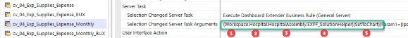
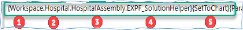
Figure 6.28
This tells OneStream to look in the Workspace named Hospital and look in the Assembly named HospAssembly for an Assembly file named EXPF_SolutionHelper and run the function SetToChart. Here is where OS will go to find the code (Figure 6.29):
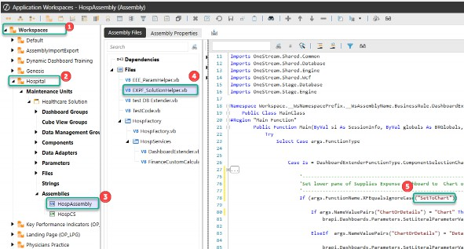
Figure 6.29
One nuance that we need to reiterate is the reference to the Workspace in position . This can be referenced in any of the three ways listed below.
Any of the following will work:
{Workspace.WorkspaceName – actual name of the Workspace.
{Workspace.WorkspaceNamePrefix – namespace prefix of Workspace.
{Workspace.Current – If you are calling the business rule from the same Workspace.Alternative statements from the example above:
{Workspace.Hospital.HospAssembly.EXPF_SolutionHelper}{SetToChart}{Para m1=|!prm_ChartOrDetail!|}
{Workspace.Hosp.HospAssembly.EXPF_SolutionHelper}{SetToChart}{Param1=|
!prm_ChartOrDetail!|}
{Workspace.Current.HospAssembly.EXPF_SolutionHelper}{SetToChart}{Param 1=|!prm_ChartOrDetail!|}Best Practice: It is best to reference with Current as it makes porting the code to other applications easier. |
As a reminder, here are the Workspace settings that are being referred to in this syntax:
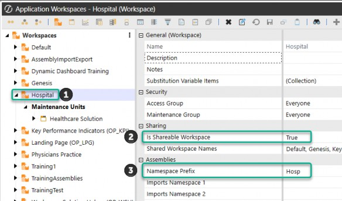
Figure 6.30
The bottom line to referencing an Assembly business rule is to ensure the system knows where the file is stored, so you need to give this information: (Workspace.WorkspaceName.AssemblyName.Filename) instead of just referencing the traditional business rule name (MyDashboardExtenderBRName).
Managing Assembly Business Rules
Dependencies
If you need to use code from Assemblies in other Workspaces or from a traditional business rule outside of Workspaces, you can create a dependency to use that code in your Assembly files.
Dependencies allow one Assembly file to reference any of the Public Subs and Functions in another. You can also create a dependency from an outside source as a Prepackaged Assembly.
These dependencies function in much the same way as referenced Assemblies do in traditional business rules. Once you have created a dependency with a shared Workspace Assembly, a business rule, or a prepackaged Assembly, you can reference it within any of your Assembly files.
Note: If the source Assembly is in a different Workspace, the source Workspace must have Is Shareable Workspace set to True. |
To add a dependency, just right-click on Dependencies and select Add Dependency.
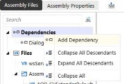
Figure 6.31
In the next sections, we will show you examples of the three different Dependency Types:
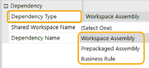
Figure 6.32
Managing Assembly Business Rules › Dependencies
Dependency Example – Workspace Assembly
When creating a dependency to another Workspace and Assembly, the [Shared Workspace Name] and [Dependency Name] must match the source Workspace name and source Assembly name (as shown in Figure 6.33).
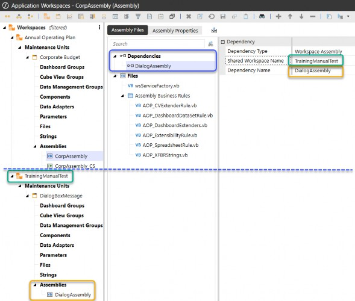
Figure 6.33
When using the Workspace Assembly dependency, after the dependency is defined, you call the public functions from the referenced Assembly into the code of the target Assembly.
Define a dependency to add a link to another Assembly.
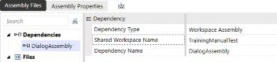
Figure 6.34
Reference the dependent class and call the needed functions in your target Assembly file.
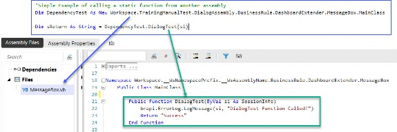
Figure 6.35
Managing Assembly Business Rules › Dependencies
Dependency Example – Business Rule
Example of creating a dependency to a traditional business rule.
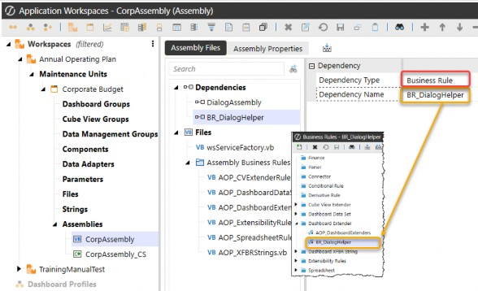
Figure 6.36
Managing Assembly Business Rules › Dependencies
Dependency Example – Prepackaged Assembly
Here is an example of creating a dependency to a prepackaged Assembly. We are referencing the DLL package and calling the libraries in an Assembly file.
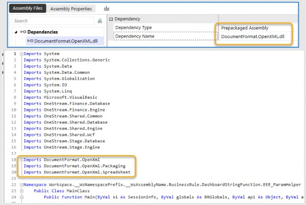
Figure 6.37
Managing Assembly Business Rules
Examples of Referencing the Six Types of Assembly Business Rules
To end this chapter on Assembly business rules, I would like to show you examples of these six different business rule source code types and how to invoke them.
Cube View Extender Business Rules
Dashboard Data Set Business Rules
Dashboard Extender Business Rules
Dashboard String Function Business Rules
Extensibility Business Rules
Spreadsheet Business Rules
Managing Assembly Business Rules › Examples of Referencing the Six Types of Assembly Business Rules
Cube View Extender Business Rules in Assembly Files
Cube View extender rules are commonly used to fine-tune the formatting of Cube Views. You can write these rules directly on a Cube View, from the Business Rules page, or through Assemblies. These rules run only on the PDF version of the Cube View.
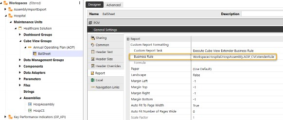
Figure 6.38
To reference a Cube View extender rule that was created as an Assembly, you should set the Cube View Custom Report Task to Execute Cube View Extender Business Rule. Refer to the rule using the following syntax:
Typical syntax for this rule type, written for the traditional Business Rules page, would be:
MyCubeViewExtenderRuleName
Because this is an Assembly business rule file, it must be modified to this syntax:
Workspace.WorkspaceName.AssemblyName.FileName
In our example, here is the syntax:
Workspace.Hospital.HospAssembly.AOP_CVExtenderRule
| Note: The ellipsis icon to select a business rule provides the syntax for Cube View extender business rules in Assembly files, but not the individual Assembly files. It still shows the individual traditional business rules present in the central repository Business Rules page. |
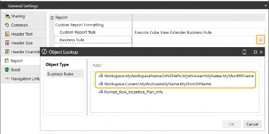
Figure 6.39
Managing Assembly Business Rules › Examples of Referencing the Six Types of Assembly Business Rules
Dashboard Data Set Business Rules in Assembly Files
In this example, a method query data adapter is referencing a business rule. However, because this was created as an Assembly file, appropriate syntax must be used.
Typical syntax for this rule type, written for the traditional Business Rules page, would be:
{MyDataSetBRName}{DataSetName}{Param1=[MyValue1], Param2=[MyValue2]}
Because this is an Assembly business rule file, it must be modified to this syntax:
{Workspace.WorkspaceName.AssemblyName.Filename}{DataSetName}{Param1=[M yValue1], Param2=[MyValue2]}
…where WorkspaceName can be Current or Namespace Prefix.
Managing Assembly Business Rules › Examples of Referencing the Six Types of Assembly Business Rules
Dashboard Extender Business Rules
In the following example, when a button is clicked, a dashboard extender rule completes the selected Workflow Profile.
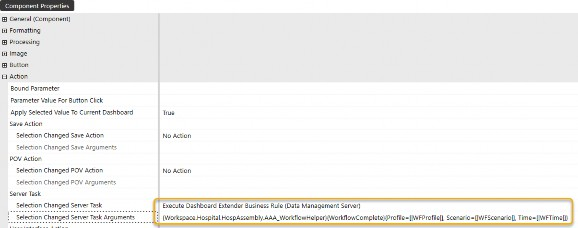
Figure 6.40
Typical syntax for this rule type, written for the traditional Business Rules page, would be:
{MyDashboardExtenderBRName}{MyFunction}{Param1=[MyValue1], Param2=[MyValue2]}
Replace this with more specific syntax:
{Workspace.WorkspaceName.AssemblyName.Filename}{MyFunction}{Param1=[My Value1], Param2=[MyValue2]}
…where WorkspaceName can be Current or Namespace Prefix.
In our example, here is the syntax:
{Workspace.Hospital.HospAssembly.AAA_WorkflowHelper}{WorkflowComplete}
{Profile= [|WFProfile|], Scenario=[|WFScenario|], Time=[|WFTime|]}Managing Assembly Business Rules › Examples of Referencing the Six Types of Assembly Business Rules
Dashboard String Function Business Rules
In the following example, we would like to execute an XFBR string function for a button component that returns True or False.
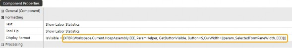
Figure 6.41
Typical syntax for this rule, written for the traditional Business Rules page, would be:
XFBR(RuleName,FunctionName,NameValuePairs)
Replace this with more specific syntax:
XFBR(Workspace.WorkspaceName.AssemblyName.FileName,FunctionName,NameVa luePairs)
…where WorkspaceName can be Current or Namespace Prefix.
In our example, here is the syntax:
XFBR(Workspace.Current.HospAssembly.EEE_ParamHelper, GetButtonVisible, Button=S,CurrWidth=|!param_SelectedFormPaneWidth_EEE!|)
Managing Assembly Business Rules › Examples of Referencing the Six Types of Assembly Business Rules
Extensibility Business Rules
From the Design and Reference Guide:
Managing Assembly Business Rules › Examples of Referencing the Six Types of Assembly Business Rules › Extensibility Business Rules
Extensibility Rule
Extensibility rules have these two types: Extender and Event Handlers. Extender rules are the most generalized type of business rule in the OneStream platform. Use these to write a simple utility function or a specific helper function called as part of a data management job. Event Handlers are exclusively called before or after a certain operation occurs within the system.
| Important: Full administrator rights are required to edit extensibility rules. |
For an extensibility business rule example, please reference the Design and Reference Guide.
There is an example of an Event Handler that sends an email notification after a ProcessCube event.
Managing Assembly Business Rules › Examples of Referencing the Six Types of Assembly Business Rules
Spreadsheet Business Rules
Traditional business rule names are typically chosen by clicking the ellipsis icon in the Spreadsheet. But with Assembly business rules, the ellipsis gives the syntax for referencing the business rule, but not the actual names.
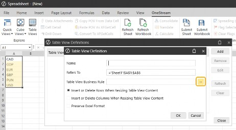
Figure 6.42
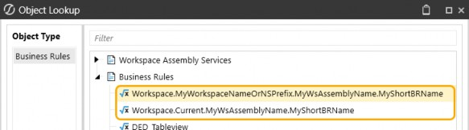
Figure 6.43
Typical syntax for this rule type, written for the traditional Business Rules page, would be:
MySpreadsheetRuleName
The Spreadsheet Assembly business rule can still be referenced using the business rules syntax:
Workspace.WorkspaceName.AssemblyName.FileName
…where WorkspaceName can be Current or Namespace Prefix.
In our example, here is the syntax:
Workspace.ESG.ESGAssembly.ESGSpreadsheetHelper
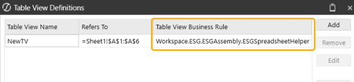
Figure 6.44
Managing Assembly Business Rules
Conclusion
As we have explored, transitioning from traditional business rules to Assembly business rules in the Workspace Aware framework is not just straightforward but also beneficial for organizing and maintaining code. By segmenting different code within a Workspace, we can achieve portability, ease of use, and improved performance.
This chapter has provided a step-by-step guide on creating, maintaining, and invoking Assembly business rules, illustrating how these rules serve as a bridge between traditional business rule methods and the more structured Assembly approach. While Assembly business rules offer a seamless transition, they remain a valuable tool that you can continue to use alongside Assembly Services.
In the next chapter, we will delve deeper into Assembly Services, highlighting the key differences and demonstrating how they play a crucial role in handling finance business rules and dynamic content. Remember, the flexibility and adaptability of Assembly business rules allow you to tailor your approach to your specific needs, ensuring a smooth and efficient workflow.
By understanding and leveraging these concepts, you are well-equipped to enhance your OneStream applications and drive greater efficiency and performance in your projects!